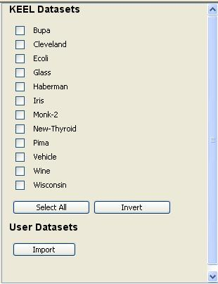

Selection of data sets
The data sets selection panel shows the available datasets for the current experiment. Its contents will depend of the type of experiment already selected:

The next step is to choose the wished data sets from the panel. The buttons Select All and Invert allows making the selection easily:
The Import button allows importing an existing data set into the KEEL environment, ready to be selected for the current experiment. By clicking on it, the main window of the Data Import Tool will be shown. The process to import a new data set can is described in the Data Management module section of the manual.
If a new data set is added, new buttons will appear allowing the user to Invert the current selection of User data sets, or to Select All of them. Furthermore, it is possible to add even more data sets (with the Import button), or to Remove the data sets selected.

When all the necessary data set are selected, the experiment design process can continue. To do so, the user must click on the white graph panel to set the data sets node of the experiment.

At this point, the KEEL Experiments module will check if all the necessary partitions of the current selected data sets are present. If some missing partitions are found (e.g. if the user selected a k value different from the sets available in the standard distribution), the tool will prompt the following message:

Clicking on Yes will result on the generation of the missing partitions inside the KEEL environment. If the user selects to No generate the partitions, this warning will be shown again before the generation of the experiment graph.